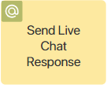
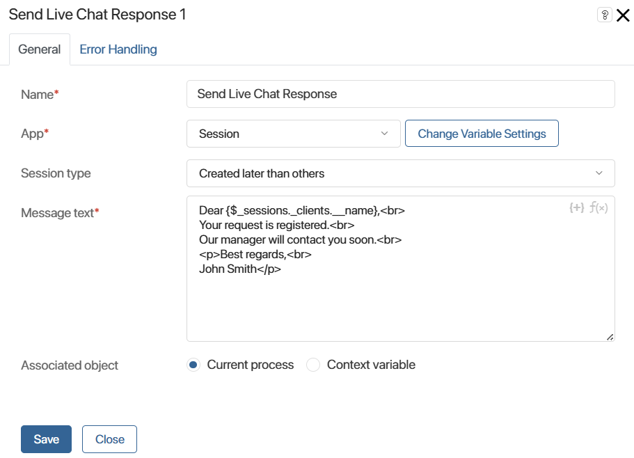
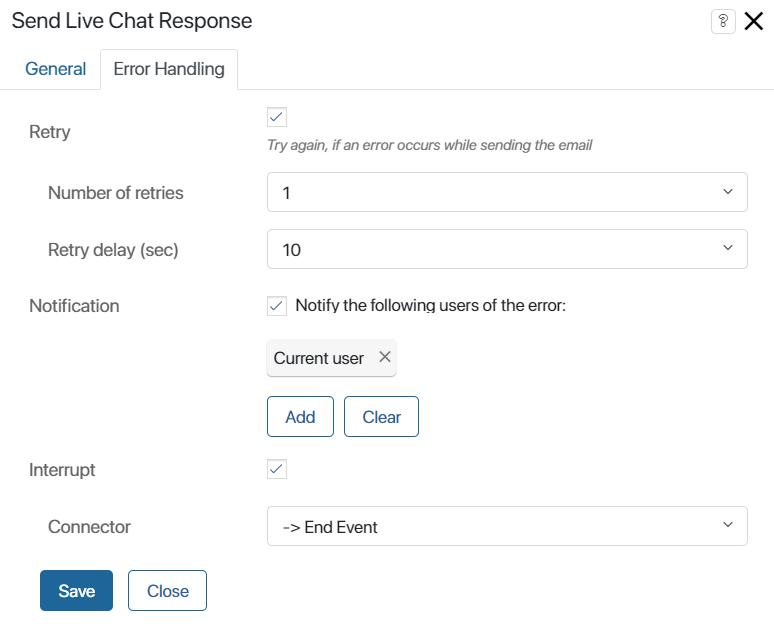

This activity is used to send messages to clients from a live chat to a messenger within a certain session during the business process. The element is placed at the step in the process where you want to notify the client that the work has been done. For example, to inform the client that their complaint has been accepted.
If you need to send a message without binding it to an existing session, use the Send a Live Chat Message activity.
The message is sent automatically without operator involvement and displayed in the session with the client.
Before configuring the activity, make sure that:
- You have connected the live chat to a messenger.
- You have selected an app that has a property of the Account type in the To register messages field in the live chat settings. This app item is used to identify the recipient and the session to which the message is sent.
начало внимание
Only users included in the Administrators group can configure the Send Live Chat Response settings.
конец внимание
Set up the activity
Make sure that you have added the App type variable into the process context. It must be linked to the app that is selected in the live chat settings to register messages.
On the process page, in the toolbar to the right of the modeling box, open the System Elements tab. Drag the Send Live Chat Response activity onto the diagram and place it wherever the process requires you to send a notification to the client.
Double-click the added activity to open the settings window.
General tab

- Name*. Enter the text to be displayed in the activity on the process diagram.
- App*. Select the app associated with the live chat for which you want to configure notifications. The app is specified in the live chat settings in the To register messages field.
Let’s assume that the messages are saved to the Complaints app. For each complaint, a workflow process is started to notify the client about the progress of their issue. When the process is executed, a message will be sent to the client that is specified in the complaint being processed. The notification will be sent to the messenger in which the client chatted with the operator.
If there is no such app, you can create a new variable of the App type by pressing Create New Variable. - Session Type. Specify within which session the notification will be sent to the client. The message can be sent to the session created later than others, earlier than others, to the session with the most recent message, or to all related sessions. This option is useful when several sessions are linked to the item, which is specified in the variable from the App* field. For example, if you have corresponded with the client several times on one complaint.
- Message Text*. Enter the text to be sent to the client. When doing so:
- Use the HTML markdown for text formatting. For example, put a single
<br>tag at the end of the sentence or phrase to start a new line. For paragraphs use the<p></p>tags and insert the text between them. - To add context variables of the current process to the text, click on the {+} icon. You can also add the DateTime() function by clicking on the f(x) icon.
- Use the HTML markdown for text formatting. For example, put a single
- Associated object. The activity stream to store the notifications is specified here:
- Current process. Notifications will appear in the activity stream associated with the process instance.
- Context variable. This option allows you to select a variable that stores a specific object, such as an app. The notifications will be stored in the stream associated with this object. If this variable is not filled in when the process is executed, the notifications will come to the process activity stream.
Error Handling tab
An error may occur while sending the notification, for example, if the recipient is not defined or the app item has no session bound to it. On the Error Handling tab, you can define how the system should behave in this case.

- Retry. Select this option to resend the notification:
- Number of retries. Specify how many times the system will try to send the notification.
- Retry delay(sec). Specify the delay between the attempts.
- Notification. Select this option to inform particular users about the error. You can select the current user, a group of users, an org chart item, or specify a context variable such as process initiator. Please note, that the current user is the user who has completed the task located prior to the Send Live Chat Response activity in the process diagram.
- Interrupt. For the correct operation of the activity, you need to enable the option and then specify in the Connector field which branch the process will follow in case of an error. The connector specified in these settings will be marked with the
 icon on the process diagram.
icon on the process diagram.
Once you have completed the activity setup, click Save and publish the process.